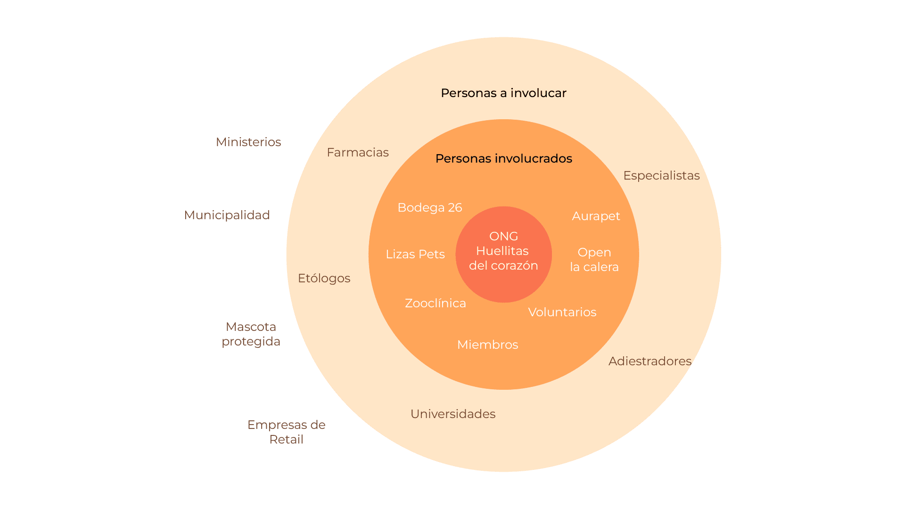
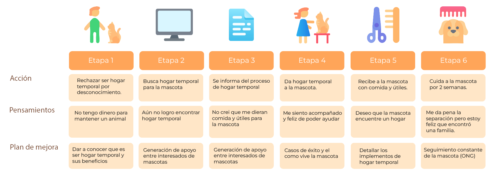
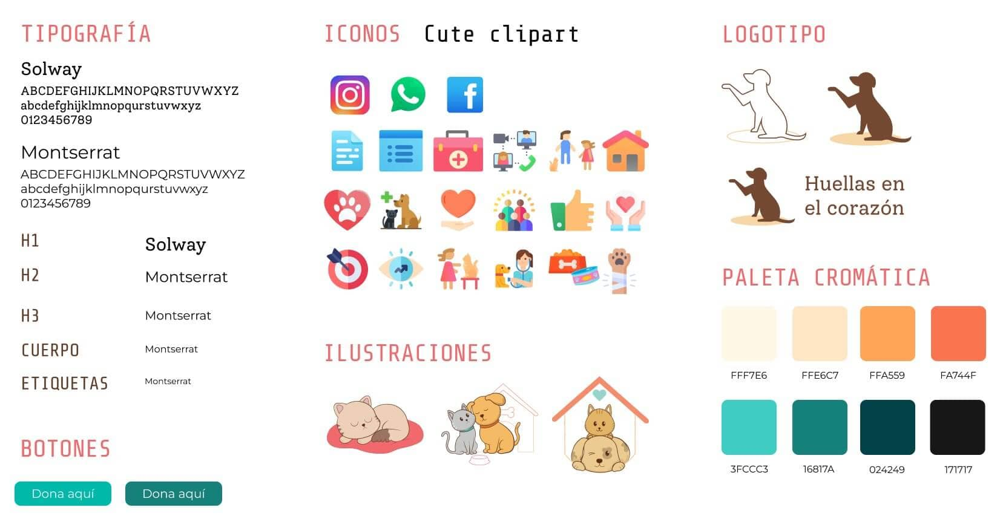

Sitio web
Huellas en el corazón
Diseño de web para fomentar la adopción de animales domésticos, recaudación de fondos y difusión de la ONG.
DESCRIPCIÓN DEL PROYECTO
Se desarrolló el sitio web para la ONG Huellas en el corazón la Calera con el objetivo principal de generar difusión de la ONG proporcionando información de la organización y cual es su misión y valores, potenciar la donación de insumos y dinero, además de fomentar la colaboración de las personas como voluntarios u hogar temporal.
Tiempo de desarrollo: 6 meses
Equipo: 5 personas
Rol que desempeñé:
- Diseño web
- Investigación de usuario
- Elaboración en wordpress
Investigación
Para comenzar el proyecto, se elaboró una investigacion de usuario, analizando mediante el uso de encuestas y entrevistas.
Además se analizó cuales son las entidades a las que tener foco de atención para potenciar mejor la ONG, dandole mayor visibilidad y considerar colaboraciones a futuro.
En un inicio el público general se consideró a personas mayores de 18 años que valoran la vida de las mascotas. En base a ello se realizó un customer Journey map, identificando que elementos se podrían mejorar para el proceso de adopción dentro del sitio web.
Conclusiones iniciales
- Dejar a los perritos más mayores primero en visibilidad dentro de la página, considerando que estos casos comúnmente se adoptan último.
- Sumar más Voluntarios y Colaboradores.
- Considerar formas de concientizar a la población, mediante redes sociales o sumar información relevante dentro de "preguntas frecuentes".
- Mejoramiento del seguimiento para las adopciones.
Wireframes
En paralelo con la elaboración de la guia de estilo, se crearon wireframes individuales por cada diseñador del equipo, los cuales fueron unificados en uno solo.

Guia de estilo
Se buscó colores que activaran y dieran energía al sitio, usando la tipografía montserrat para mantener un trato amable al usuario e invitar a visitar el sitio, además de iconos que combinen con la estética moderna, minimalista y amigable del sitio.
Se incluyó además ilustraciones personalizadas para el sitio, manteniendo una estética cercana y mostrando algunas mascotas que han sido rescatadas por la ONG.
Mockups


Tengamos contacto
Si tienes alguna duda de mi trabajo o algun proyecto, puedes contactarme en cualquiera de las redes sociales a continuación.